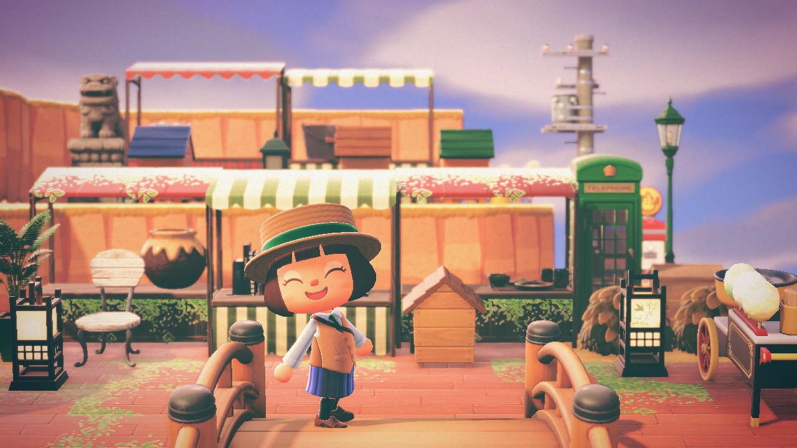
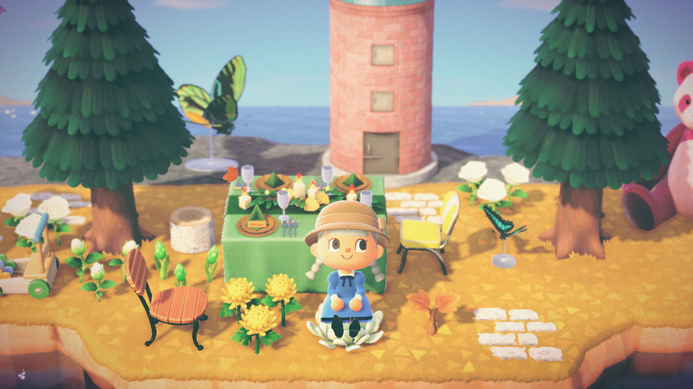
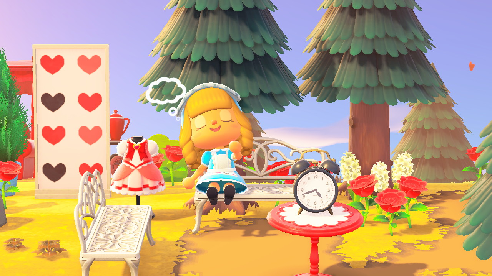
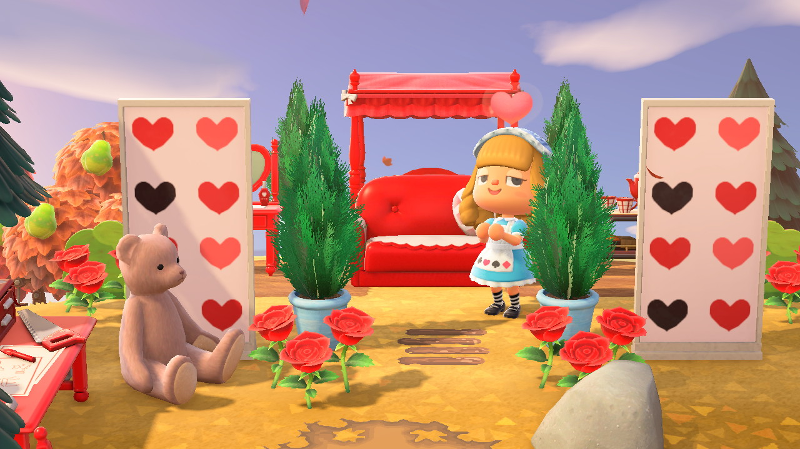
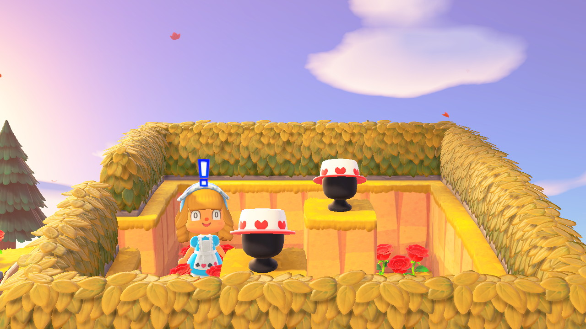
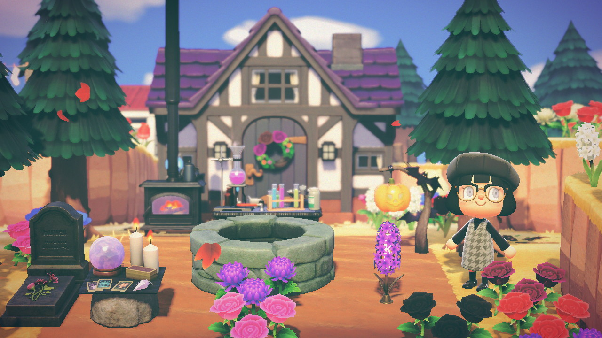
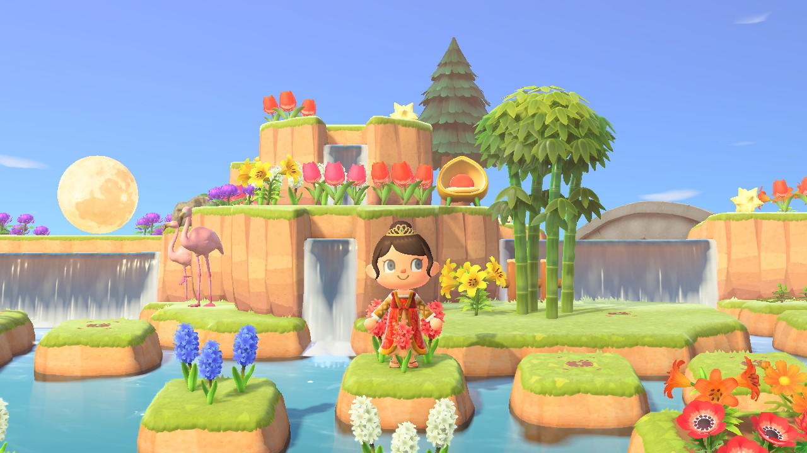
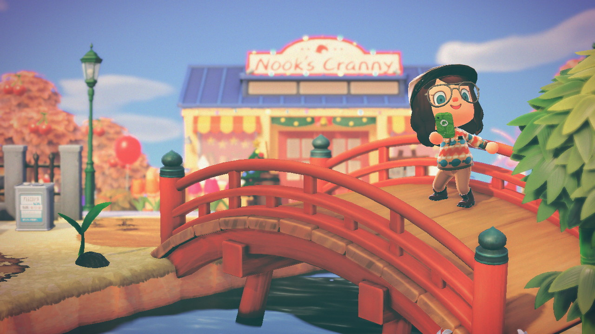
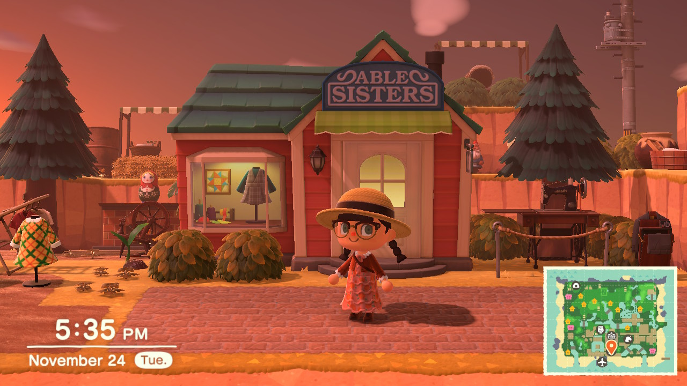
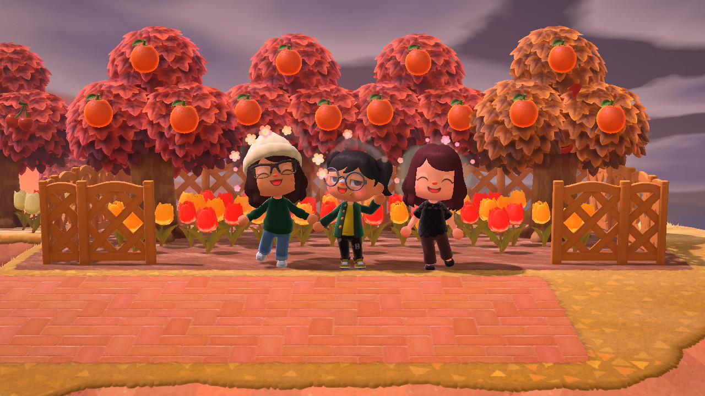

Island 1: KENNYYYY!
Dream Address: DA-0283-0247-8098
KENNYYY! was my very first Animal Crossing town -- EVER. Having never played the earlier games like City Folk and New Leaf, it took me a lot of time to get through the tutorial. I was also playing without time traveling, meaning I played without skipping forward or backward in time by changing the time on my Switch. Despite its chaotic (and kind of accidental) name, it is a peaceful generic storybook town, sprinkled with scenes inspired by Alice in Wonderland, Cinderella, Howl's Moving Castle, and more.
 I especially loved the Alice in Wonderland area I made...
  …but I dont think Alice did.
KENNYYYY! had its very own inn & suites! It was complete with 3 different rooms, a seaside cafe, and a banquet hall. Each room is a different tier, with basic, deluxe, and luxury units. The room pictured above is the basic double room. The deluxe suite is equipped with a King bed and a luxurious marble bathroom. Upstairs, the luxury suite is equipped with a living room, a mini kitchen, a king bed and a large bathroom with a whirpool jacuzzi tub. You can see the complete hotel at my Dream Address above!
I also made a spooky witch-themed area.
   To this day, KENNYYYY! has some of my favorite landscaping choices. I was totally freestyling it since it was my first island, it ended up being the island I terraformed the most out of my islands so far. Overall, this island was SO much fun to make, but I reached a point where it felt like I had added all that I could. Before I restarted my island, however, I did save it to a Dream Address, allowing anyone with the code to visit. There is so much more to KENNYYYY! to see what is pictured here, so you are welcome to visit in-game via dream!
Back to Islands